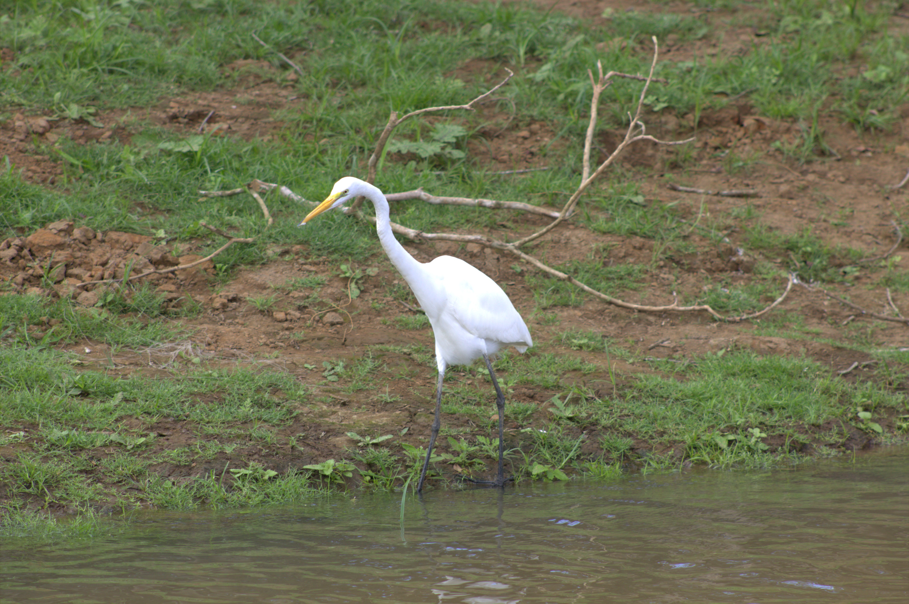

Ideal para observación
El refugio ofrece condiciones excepcionales para el avistamiento de aves en diferentes momentos del año.
Avistamiento • Biodiversidad • Turismo ecológico
Caño Negro es uno de los sitios más importantes de Costa Rica para la observación de aves. Sus lagunas, bosques inundados, playones y vegetación acuática ofrecen refugio, alimento y zonas de reproducción para numerosas especies residentes y migratorias.
En esta sección se presentan algunas de las aves más representativas de Caño Negro. Cada una aporta belleza, equilibrio ecológico y un valor especial para el turismo de naturaleza y la conservación.
El refugio ofrece condiciones excepcionales para el avistamiento de aves en diferentes momentos del año.
Lagunas, caños, bosques inundados y playones crean espacios apropiados para muchas especies.
Algunas aves habitan el refugio todo el año y otras lo visitan en temporadas específicas.
Varias de estas especies dependen de humedales saludables para alimentarse, descansar o reproducirse.

Es una de las aves más llamativas del humedal por su plumaje elegante y su silueta estilizada. Suele habitar zonas tranquilas con vegetación densa, donde encuentra protección y alimento.
Su presencia en Caño Negro refuerza la importancia del refugio como sitio clave para aves asociadas a ambientes húmedos y poco alterados.

El jabirú es una de las aves más emblemáticas de los humedales de Centroamérica. Su gran tamaño, su cuello desnudo y su porte imponente lo convierten en una especie inolvidable para quienes visitan Caño Negro.
Depende de ambientes acuáticos amplios para alimentarse y desplazarse, por lo que su presencia está estrechamente ligada a la salud del humedal.

Esta ave destaca por su plumaje rosado y por la forma particular de su pico, adaptado para buscar alimento en aguas poco profundas.
Es una especie muy vistosa que aporta color y movimiento al paisaje de lagunas, orillas y playones inundados.

El cigüeñón es una ave grande asociada a humedales, lagunas someras y zonas abiertas donde puede desplazarse con facilidad para buscar alimento.
Su figura robusta y su comportamiento tranquilo la convierten en una especie fácil de reconocer durante recorridos por el refugio.

Esta ave acuática es famosa por su cuello largo y delgado, que sobresale del agua cuando nada, dándole una apariencia muy particular.
Habita lagunas, caños y sectores tranquilos del humedal, donde suele pescar y secar sus alas al sol después de sumergirse.

Es una de las aves más elegantes y reconocibles de los humedales costarricenses. Su plumaje blanco y su forma de desplazarse lentamente por las orillas la hacen muy llamativa.
En Caño Negro puede observarse en lagunas, canales y sectores abiertos donde busca peces, insectos y otros pequeños organismos.